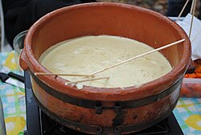

Bagna Cauda

Description
Bagna càuda (Piedmontese: [ˈbɑɲɐ ˈkɑʊ̯dɐ];
meaning "hot dip", "hot gravy")
is a hot dish made from garlic and anchovies,
originating in Provence,
France and popular in Piedmont,
Italy, since the 16th century.
The dish is served and consumed
in a manner similar to fondue,
sometimes as an appetizer,
with raw or cooked vegetables
typically used to dip into it.
Ingredients
- 1 small cauliflower, broken into florets
- olive oil
- 1 small kohlrabi, peeled and cut into wedges
- squeeze of juice lemon
- 3 carrots, cut into long batons
- 4 sticks celery, cut into long batons
- 2 heads red chicory, hearts halved
- tin or jar in extra virgin olive oil anchovies
- 50g butter
- 10 cloves garlic, crushed
- 3 tbsp double cream
- 4 slices sourdough
Steps
- Heat the oven to 220c/fan 200c/gas 7. Spread the cauliflower out in a shallow baking dish. Pour over 1 tbsp olive oil, season and roast for 20-25 minutes, stirring once.
- Drop the kohlrabi wedges into boiling water and blanch for 3 minutes. Remove, run under cold water and drain. Toss in a little lemon juice. Arrange all the vegetables on a platter or board, leaving space for the bread and sauce.
- Tip out the oil from the anchovies into a jug and top up with olive oil to make 150ml. Heat the butter and oil together in a saucepan. Add the garlic and anchovies and cook over a low heat for 5 minutes. When the anchovies have all melted and the garlic is very soft, slowly whisk in the double cream to make a sauce and keep warm.
- Season with black pepper. Meanwhile, toast the sourdough, cut it into chunky soldiers and add them to the platter. Transfer the warm sauce to a serving dish, put it on platter and serve straight away.